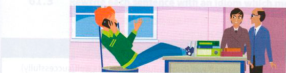
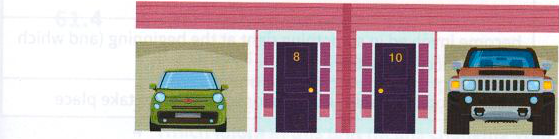
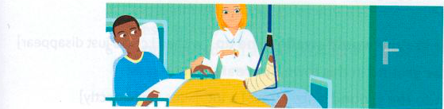

Bài tập
60.1 Hoàn thành mỗi thành ngữ sau với good, bad, better, best, worse hoặc worst.
- Học một chút tiếng Nhật sẽ giúp ích nhiều cho bạn (stand you in stead) khi bạn đến thăm Nhật Bản.
- Chris đã lâm vào tình trạng khá tồi tệ (in quite a way) kể từ khi bị cúm vào tháng Một.
- Dù trái với nhận thức sáng suốt của bản thân (against my judgement), tôi vẫn đồng ý việc có một máy karaoke tại bữa tiệc của chúng tôi.
- Những người sống ở đây được tận hưởng những gì tốt nhất của cả hai thế giới (the of both worlds): sự yên bình của nông thôn cùng kết nối đường sắt nhanh chóng và thường xuyên với thành phố.
- Nếu tình huống tồi tệ nhất xảy ra (if the comes to the ), chúng ta luôn có thể đi bộ về nhà.
- Hiệu trưởng đã cảnh cáo học sinh phải cư xử tốt nhất có thể (be on their behaviour) trong khi các thanh tra đang ở trường.
- Khi Elliot bị sa thải, anh ấy đã quyết định chấp nhận hoàn cảnh và cố gắng làm tốt nhất có thể (make the of a job) bằng cách tận dụng thời gian rảnh rỗi của mình để tham gia một khóa học máy tính.
- Tình hình tại hiện trường vụ thảm họa dường như ngày càng tồi tệ hơn (going from to ).
60.2 Sắp xếp các từ theo thứ tự để tạo thành câu hoàn chỉnh.
- else / to / better / Sarah / has / one / go / everyone / always / than
- to / to / worse / going / be / bad / Conditions / seem / from
- the / tried / to / best / we / was / make / bad / a / job / weather / The / of / bad / but
- it / I / I / the / of / her / better / nearly / thought / told / but / truth
- very / As / he / never / ambitious / second / Mark / settle / is / for / will / best
- gave / Rose / as / job / up / tried / ski / a / it / learn / soon / but / bad / to / to
- worst / ask / If / a / we / worst / always / Dad / comes / the / to / can / loan / for / the
- the / happens / Whatever / for / best / happens
60.3 Quan sát các bức tranh và trả lời các câu hỏi.

- Cậu bé có đang cư xử tốt nhất có thể (on his best behaviour) không?
- Điều gì có thể xảy ra nếu mọi chuyện trở nên tồi tệ hơn (go from bad to worse)?

- Những người ở nhà số 10 đang cố gắng chơi trội hơn (go one better) hàng xóm của họ như thế nào?

- Mike đang ở trong tình trạng tồi tệ (in a bad way) theo nghĩa nào?
- Làm thế nào để cậu ấy chấp nhận hoàn cảnh khó khăn và cố gắng làm tốt nhất có thể (make the best of a bad job)?
60.4 Chọn hai thành ngữ từ mỗi phần trong số ba phần ở trang đối diện. Sau đó viết các câu về trải nghiệm cá nhân của riêng bạn.
ví dụ:
Tôi đang học tiếng Anh vì tôi chắc chắn rằng nó sẽ giúp ích nhiều cho tôi (stand me in good stead) trong tương lai.